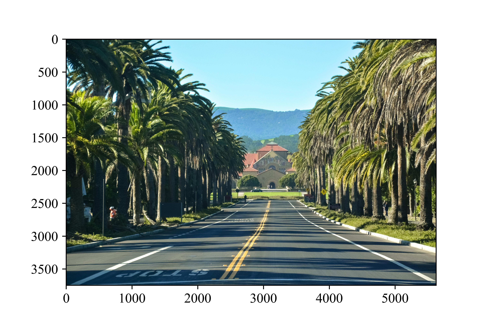

输入与文件读取
记不记得我们梦开始的地方——A+B Problem。在这个问题中，我们只是简单地计算了1+2的值，却没有深究能否让我们的用户自行输入这两个数。在那之后的编程实践中我们有意无意地用到了用户输入这一功能，甚至我们会认为非常自然，只是我们一直没有将这个函数拎出来单独说说而已。现在，我们终于可以介绍接受用户输入的最广泛的内置函数：input()。
4.1 接受用户的输入
🍈输入两个整数 \(a\)，\(b\)，输出它们的和。输入为两行，是两个整数\(a\)和\(b\)；输出1个数字，表示二者的和。
使用Python接受用户的输入时，我们首先要明确一个原则：不论输入的是什么，其本质都是一个字符串。换言之，不论输入123、[1, 2, 3]还是1+1，它们都是字符串。也就是说，
都会得到
于是我们关心的问题就在于，如何将这个字符串转换为我们希望的数据类型。现在我们请出几乎万能的内置函数eval()，它能够将我们输入的内容当作一个Python的表达式，例如，我们可以打开交互式编程界面，输入下面的内容。
Python 3.6.9 (default, Mar 15 2022, 13:55:28)
[GCC 8.4.0] on linux
Type "help", "copyright", "credits" or "license" for more information.
>>> eval("1+1")
2
>>> lst = eval("[1, 2, 3]")
>>> print(type(lst))
<class 'list'>
>>> print(lst)
[1, 2, 3]
>>> num = eval("2143")
>>> print(type(num))
<class 'int'>
>>> var = 2043
>>> eval("var + 1")
2044
4.2 面向OJ编程：处理OJ的输入
尽管在实际工程中的输入不会像我们现在学习的这样，所谓的输入就是在一个交互式界面（甚至只是命令行的黑框框）中进行的，但是处理OJ(Online Judge)的输入也是十分重要的内容。在标准化的测试中，OJ会采用标准化输入，本质上说是和我们在命令行中输入是一致的。
下面的内容是根据不同而输入类型做的一些总结性指南。事实上，只需要把握住“输入的一切本质上都是字符串”，那么我们对输入的处理事实上就是对字符串的处理，然后将得到的数据保存到其他地方就可以了。
4.2.1 一行，多个数字
下面的示例是一行输入多个数字，每个数字之间用逗号隔开的处理方式，即只需要使用split()将字符串切分成列表即可。如果数字之间是以逗号或其他符号分隔，则需要为split()方法传入分隔符作为参数。
🍈（NOIP2005，普及组，陶陶摘苹果）输入包括两行数据。第一行包含10个100到200之间（包括100和200）的整数（以厘米为单位）分别表示10个苹果到地面的高度，两个相邻的整数之间用一个空格隔开。第二行只包括一个100到120之间（包含100和120）的整数（以厘米为单位），表示陶陶把手伸直的时候能够达到的最大高度。
注意，split()之后得到的列表中每一个元素依然是字符串类型的，因此我们还需要遍历整个列表，将其转换为题目所说的整数类型。实际上，代码应该是
apple_height = input().split()
for i in range(0, len(apple_height):
apple_height[i] = int(apple_height[i])
max_height = int(input())
循环看起来非常的冗杂。现在你应该能够对函数式编程有一点点体悟了：我们完全可以让代码显得更简洁。使用map函数就能完成这一点。最终，我们可以写成
4.2.2 确定行数的多行
下面的示例是确定行数的多行输入处理方案。
🍈（NOIP2005，普及组，校门外的树）第一行有两个整数，分别表示马路的长度\(l\)和区域的数目\(m\)。接下来\(m\)行，每行两个整数\(u\)，\(v\)表示一个区域的起始点和终止点的坐标。
注意到，由于行数是确定的，即\(m+1\)行，因此我们可以使用for循环来依次读入。
l_m = list(map(lambda x: int(x), input().split()))
lst = []
for i in range(l_m[1]):
lst.append(list(map(lambda x: int(x), input.().split())))
4.2.3 不确定行数的多行
由于我们不清楚会输入多少行，因此我们就先尝试读取，直到读取到EOF(End of file)。
以上语句的含义即为先尝试读取数据，如果失败则跳出循环。事实上大多数错误处理都可以用这个方式来解决，即try...except...语句。
4.2.4 关于面向OJ编程的若干提示
尽管“面向OJ编程”听起来有那么一丝戏谑，但是对于熟悉的这一套思维模式的人来说，可能这种思维模式会影响他们之后课程的学习。真实的应用场景下，输入和输出并不是像OJ这般朴素和直白的；实际的工程中，代码更重要的是正常地运行起来，再是考虑优化的问题；OI竞赛中更多的是面向过程，而在较大规模的项目进行开发时，程序员的编程往往是需要面向对象的。
此外，OJ还给了测评者可以钻空子的各种机会。例如，通过构造不同的分支，可以让测评机为我们返回各种不同类型的错误。例如

此外，OJ还容易造就一些不好的习惯，由于程序只会被运行一次，完全可以不用考虑申请的内存空间是否需要回收，而在生产环境中就会造成严重的错误。
4.3 对图像的文件读取
开始之前，我们首先需要知道一张照片在计算机内是如何存储的。图片中有许多像素，我们可以简单地认为每个像素都是一个单位。对于以灰度模式存储的彩色图像，这个单位中只包含一个元素，即一个0~255的整数，越接近0，像素点颜色越黑；越接近255，像素点颜色越白。对于以RGB模式存储的彩色图像，每一个像素需要三个指标来确定颜色，即R、G和B，每个R、G、B也是0~255的整数，分别代表红、绿、蓝三种颜色，计算机在显示图像时将这些颜色叠加，就形成了我们可见的彩色图像。
在这里我们需要用到Pillow库，可以通过下面的命令来安装
这是一张照片，文件名为palm.jpg。

然后我们就可以使用Pillow库提供的功能来读取这张图片了。
如果要将RGB图像转化为灰度图像，可以
我们也可以将图像的R、G、B通道分来，然后交换顺序再重新合成一张图像。
注意，第一行的image.split()中image是指我们刚刚读入的图像；第二行的Image是我们导入的包。
我们也可以将图像转化为NumPy中的数组，然后使用Matplotlib绘制出来。
import numpy as np
import matplotlib.pyplot as plt
array = np.array(image)
fig = plt.figure()
plt.imshow(array)

4.4 对.csv和.txt文件的读取
这两类文件实际上读入方式几乎是一致的，使用open()方式。
infile = open("passage.txt", encoding="utf-8")
passage = infile.read()
print(passage)
infile.close()
这样我们就能原封不动地打印出整篇文章。当然，我们可以一行一行的读入。
infile = open("passage.txt", encoding="utf-8")
for paragraph in infile.readlines():
print(paragraph)
infile.close()
之后的工作就是我们熟悉的字符串处理。
当然，如果没有infile.close()在大多数情况下我们的程序也是能够工作的；但是，如果我们要向文件中写入数据，如果没有将文件关闭，那么我们写入的文件只会保存在缓冲区中，而不会写入文件内。所以，我们鼓励使用下面的方式：
这样就不需要再写close()了，因为Python会自动判断什么时候需要关闭文件。
对于.csv文件，流程大致是相同的。只是读入的文件是以逗号隔开的，但是，读入的依旧是字符串。至于处理字符串的方法，请参阅之前的内容。
*4.4.1 对.txt文件的写入
对于一个打开了的文件，我们可以对其调用write()方法写入字符串。
outfile = open("passage.txt", "w", encoding="utf-8")
outfile.write("Have a nice day!")
outfile.close()
这样的方式会首先清空passage.txt，然后再写入内容。如果我们希望在源文件上追加内容，应该将模式切换为a(追加)。